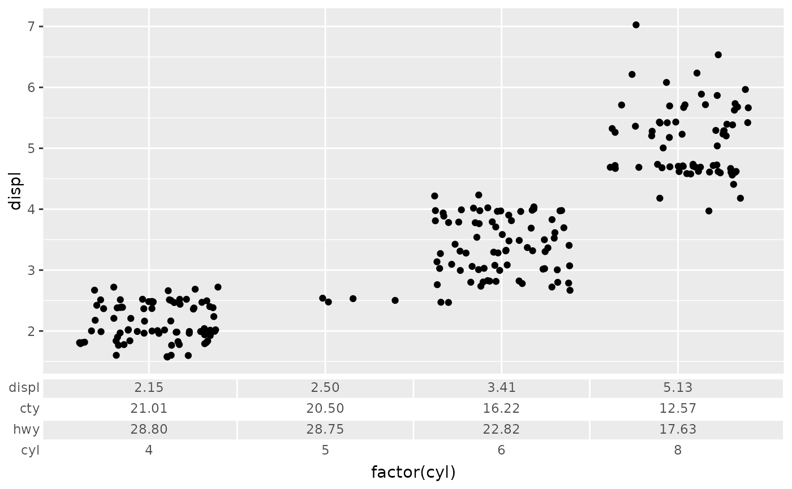
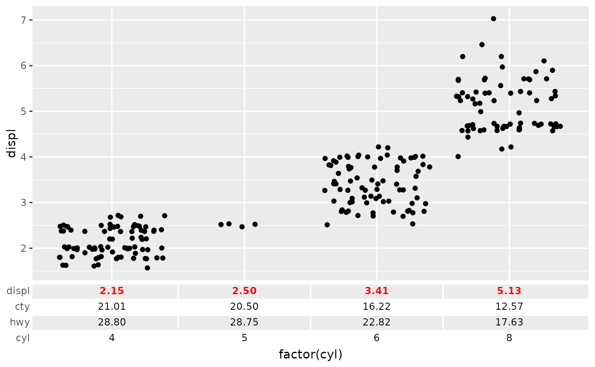
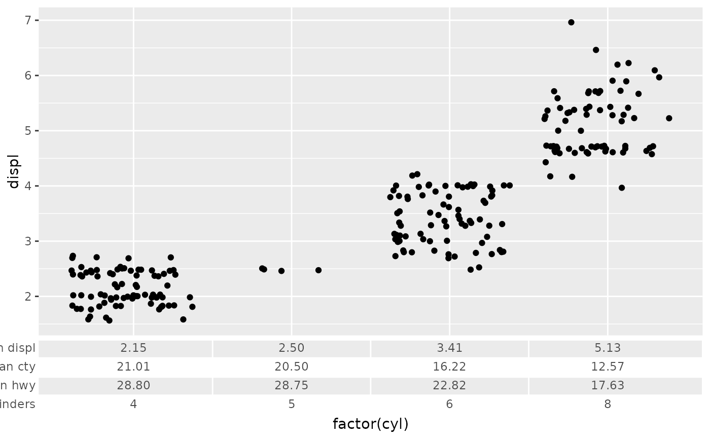
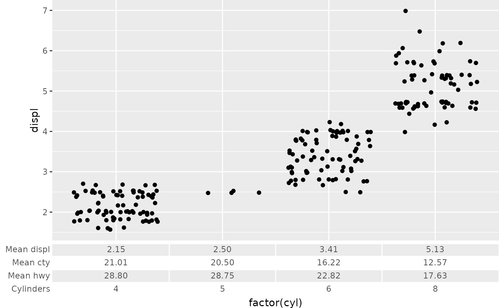

Table as axis guide
guide_axis_table.RdUnlike a regular axis, this axis guide formats a table to be aligned with the break positions of a scale. Axis tables along the x-axis are transposed.
Usage
guide_axis_table(
table = NULL,
key_col = NULL,
colnames = NULL,
colnames_theme = element_text(inherit.blank = TRUE),
colnames_position = c("top", "left"),
cell_text_theme = element_text(inherit.blank = TRUE),
cell_padding = 0.25,
cell_just = 0.5,
sep_cell_rows = element_line(inherit.blank = TRUE),
sep_cell_cols = element_line(inherit.blank = TRUE),
sep_borders = element_line(inherit.blank = TRUE),
sep_title = element_line(inherit.blank = TRUE),
shade_odd = element_rect(inherit.blank = TRUE),
shade_even = element_rect(inherit.blank = TRUE),
shade_title = element_blank(),
uniform_size = FALSE,
align_panel = TRUE,
...
)Arguments
- table
A
data.frame- key_col
An expression describing how a column in the
tableargument should be lined up with the scale's labels.- colnames
A
charactervector equal in length toncol(table)setting the titles of columns. Can be used to set syntactically invalid, but nicely formatted, names.- colnames_theme
An
<element_text>(default) or<element_blank>object controlling the appearance of the text in title cells. These inherit from theaxis.label.{x/y}.{position}setting the the plot's theme.- colnames_position
A placement for the title cells. If guide is horizontal, can be
"left"or"right". If guide is vertical, can be"top"or"bottom".- cell_text_theme
An
<element_text>(default) or<element_blank>object controlling the appearance of the text in regular cells. This inherits from theaxis.label.{x/y}.{position}setting in the plot's theme.- cell_padding
A
numeric(1)orunit()of length 1, indicating how much text should be padded. By setting anumeric(1), the padding size is relative to thecell_text_theme's font size.- cell_just
A
numeric(1)between 0 and 1, setting the justification of the cells relative to the break positions of the scale.- sep_cell_rows, sep_cell_cols
An
<element_line>(default) or<element_blank>object controlling the appearance of lines that separate regular cells in the interior of the table. Note that therowsandcolsrefer to rows and columns in thetableargument respectively. These do not refer to what becomes a row or column in the final, possibly transposed, table. This inherits from thepanel.grid.major.{x/y}setting in the plot's theme.- sep_borders
An
<element_line>(default) or<element_blank>object controlling the appearance of lines that separate the outer regular cells from the plot exterior. This inherits from thepanel.grid.major.{x/y}setting in the plot's theme.- sep_title
An
<element_line>(default) or<element_blank>object controlling the appearance of lines that separate the regular cells from the title cells. This inherits from theaxis.line.{x/y}.{position}setting in the plot's theme.- shade_odd, shade_even
An
<element_rect>(default) or<element_blank>object controlling the appearance of the background fills of 1-cell high, horizontal lines in the table. These respectively inherit from thepanel.backgroundandplot.backgroundsettings in the plot's theme.- shade_title
An
<element_rect>or<element_blank>(default) object controlling the appearance of the background fills of the title cells.- uniform_size
A
logical(1)which ifTRUE, makes all cells have the same size in the direction orthogonal to the axis.- align_panel
A
logical(1)which ifTRUE(default), aligns the first and last cells to the plotting panel. IfFALSE, first and last cells are the size between two breaks, as usual.- ...
Currently not in use.
Value
A <Guide> ggproto object that can be given to the
guides() function, or set as the guide argument
in a position scale.
![[Experimental]](figures/lifecycle-experimental.svg)
See also
Other axis variants:
guide_axis_cap(),
guide_axis_extend(),
guide_axis_minor(),
guide_axis_nested()
Examples
# Creating summary table
tbl <- lapply(split(mpg[, c("displ", "cty", "hwy")], mpg$cyl), colMeans)
tbl <- as.data.frame(do.call(rbind, tbl))
tbl[] <- lapply(tbl, scales::number, accuracy = 0.01)
tbl$cyl <- rownames(tbl)
# A basic plot
p <- ggplot(mpg, aes(factor(cyl), displ)) +
geom_jitter()
# Adding the table
p + guides(
x = guide_axis_table(
table = tbl, key_col = cyl
)
)

# Cell text can be formatted seperately
faces <- c("bold", rep("plain", ncol(tbl) - 1))
colours <- c("red", rep("black", ncol(tbl) - 1))
p + guides(
x = guide_axis_table(
table = tbl, key_col = cyl,
# Highlight specific variable. In this case, the 'displ' we put on y-axis
cell_text_theme = elements_text(face = faces, colour = colours)
)
)

# Titles can easily become too long, and can't be automatically adjusted
p <- p + guides(
x = guide_axis_table(
table = tbl, key_col = cyl,
colnames = c("Mean displ", "Mean cty", "Mean hwy", "Cylinders")
)
)
p

# This can be remedied by setting the plot margins appropriately
p + theme(plot.margin = margin(l = 32))
